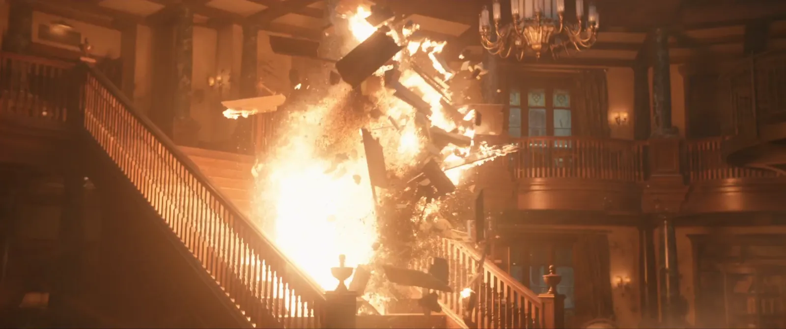
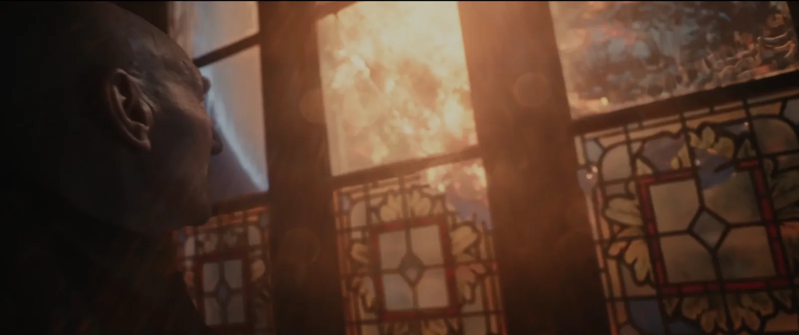

Marvel Studios a enfin dévoilé le premier trailer complet d'Avengers : Doomsday, réalisé par Anthony et Joe Russo. Après des mois de teasing, de rumeurs et de comptes à rebours, le studio lève enfin le voile sur ce qui s'annonce comme l'un des événements les plus attendus du MCU. Rendez-vous est pris le 16 décembre 2026 en salles.
Globalement, le trailer est propre sur tous les aspects. Mais entre l'enthousiasme et les quelques réserves, il y a beaucoup à dire sur cette bande-annonce. Voici notre analyse à chaud.
Sommaire de l'article
- Une affiche qui sort des codes Marvel
- Premières impressions : du beau spectacle
- Thor contre Doom : un manque d'impact visuel
- L'école de Xavier détruite : X-Men, Fantastic Four et Avengers réunis dans le chaos
- Le vrai défi du film : l'attachement aux personnages
- Doom, déjà une figure imposante
- Les incursions : une menace multiversale inquiétante
- Thor et Captain America : des retrouvailles chargées d'émotion
- Conclusion : rendez-vous le 16 décembre
Une affiche qui sort des codes Marvel
Avant même de parler du trailer, il faut s'arrêter sur l'affiche officielle du film. Doom y est représenté posant devant une œuvre d'art figurant une femme et un enfant, dans une composition presque picturale, loin du montage habituel de héros en pose menaçante qu'on a l'habitude de voir chez Marvel.
C'est une image sublime et assez rare de la part du studio. Ce choix renforce l'ambiguïté du personnage : un conquérant égocentrique, mais mis en scène ici presque comme une figure tragique ou protectrice, entre le tyran et l'être qui s'ignore. Une manière élégante d'annoncer, avant même la première image du trailer, que ce Doom-là ne sera pas un simple grand méchant caricatural.

Premières impressions : du beau spectacle
Je suis hype par les événements que propose ce trailer. Visuellement, c'est propre : les couleurs sont bonnes, les plans sont bons. On sent que Marvel a mis les moyens pour faire de cette bande-annonce un véritable événement.
Cela dit, il reste quelques problèmes de mise en scène à régler, notamment sur certains plans d'action qui manquent de puissance visuelle.
Thor contre Doom : un manque d'impact visuel
Le principal reproche que je ferais concerne l'attaque de Thor sur Doom : elle n'est pas assez puissante visuellement. Quand Doom l'arrête avec deux doigts seulement, l'impact ne se ressent pas. On ne perçoit pas la force que Thor est censé mettre dans son coup.
Je comprends que ce soit volontaire, pour montrer la supériorité écrasante de Doom face au dieu du Tonnerre. Mais il aurait fallu, à minima, montrer l'effet de cette attaque sur l'environnement pour faire ressentir sa puissance, même si elle est stoppée net.

L'école de Xavier détruite : X-Men, Fantastic Four et Avengers réunis dans le chaos
Le trailer montre l'école de Xavier détruite par les combats qui opposent les X-Men, les 4 Fantastiques et les Avengers. Plusieurs affrontements semblent particulièrement intéressants :
- Mystique contre Yelena, avec Mystique qui se transforme en Yelena pour le combat.
- Gambit contre Shang-Chi.
- Et sans doute un Cyclope contre Doom, même si cet affrontement n'est pas encore montré dans le trailer.
Ces face-à-face promettent des combats variés et surtout un vrai mélange des générations de héros Marvel, entre les vétérans X-Men et les figures plus récentes du MCU.

Le vrai défi du film : l'attachement aux personnages
Le souci, c'est qu'Avengers : Doomsday ne donne pas vraiment de sensation de conclusion, car seuls quelques films de la saga du Multivers ont réellement teasé Doomsday. Ce sera sûrement l'un des gros défauts du film : un manque d'attachement.
Les 4 Fantastiques, on ne les a vus qu'une seule fois, il y a un an. Les X-Men, ça fait 20 ans, donc ça joue sur une forme de nostalgie puisqu'on a grandi avec ces personnages. Les Avengers, ce sont des figures plus jeunes, mais qu'on n'a pas vues plus de deux fois en sept ans. C'est forcément un défaut de base : le film part sur une fondation fragile en matière d'attachement émotionnel.
Doom, déjà une figure imposante
Pour Doom, je comprends qu'il puisse apparaître de nulle part et exposer d'emblée ses convictions de conquérant égocentrique. Et je pense que Doom sera réussi.
Dans le trailer, il s'impose déjà comme une figure importante et puissante, capable de tenir tête à des personnages aussi établis que Thor sans effort apparent.
Personnellement, je comprends que certains puissent être hype par cette bande-annonce, comme moi, tandis que d'autres la trouveront décevante. Mais il faut garder à l'esprit que ce film va servir de tremplin à Secret Wars et va conclure une saga de plus de 20 ans. Les deux films préparent le reboot et une toute nouvelle version du MCU axée sur les Mutants.

Les incursions : une menace multiversale inquiétante
Dans le trailer, les incursions sont vraiment inquiétantes. Visuellement, c'est dangereux, on le voit dès le début de la bande-annonce. On sent que c'est une menace qui pèse lourdement sur les héros des différentes Terres.

Thor et Captain America : des retrouvailles chargées d'émotion
Thor et Captain America se réunissent dans un vaisseau, et Thor n'en croit pas ses yeux : il teste Steve avec Mjolnir pour savoir s'il s'agit bien du vrai Captain America. C'est une très bonne idée d'écriture.

Ils reviendront ensuite sur Terre pour avertir les autres héros du danger qui approche, dont Bucky et Sam. Et leurs visages, à ce moment-là, en disent long :
- Ant-Man est choqué, sans voix, fixé sur Steve comme quelqu'un qui revoit un ancien partenaire.
- Bucky n'est pas impressionné et reste neutre.
- Captain America (Sam), lui, a une expression différente : il se pose des questions mais semble heureux de revoir Steve.
Les trois réagissent différemment face à cette même situation, ce qui donne une vraie richesse émotionnelle à cette scène de retrouvailles.
Conclusion : rendez-vous le 16 décembre
Je reste globalement hype par Avengers : Doomsday suite à ces images. Et visuellement, ça fait du bien de voir de vraies images plutôt que des textes descriptifs ou des vidéos IA fake.
Les attentes sont désormais immenses. Marvel parviendra-t-il à recréer la magie d'Infinity War et Endgame ? Réponse dans un peu plus de cinq mois.
➡️ À lire aussi : Spider-Man : Brand New Day – Marvel prépare la renaissance de Peter Parker